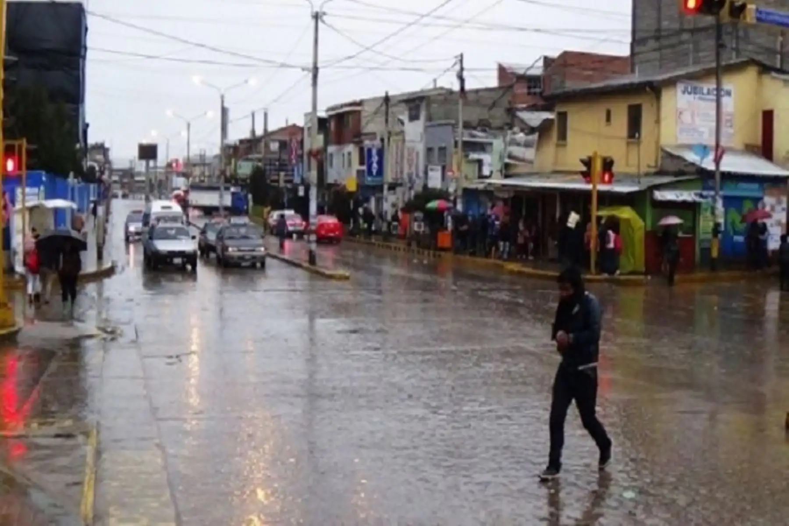

El Servicio Nacional de Meteorología e Hidrología del Perú (Senamhi) ha emitido nuevos avisos técnicos en el marco del seguimiento continuo al fenómeno de El Niño. De acuerdo con las instituciones científicas y los reportes oficiales, las aguas del mar adyacente a la costa norte registran actualmente temperaturas con valores que se encuentran por encima de los 26 grados Celsius. Esta anomalía térmica marina constituye el principal factor dinamizador que impulsará el cambio en las condiciones atmosféricas de la región.
Ante este escenario caracterizado por el calentamiento superficial del mar, el organismo técnico adscrito al Ministerio del Ambiente ha previsto que, en los próximos días, se inicien de manera paulatina las precipitaciones pluviales en diversos sectores de la costa norte peruana. El incremento térmico frente al litoral actúa como un combustible constante para la formación de nubosidad, lo que propiciará la ocurrencia de lluvias de diversa intensidad en las zonas llanas y valles de los departamentos norteños.
El comportamiento del mar frente al litoral peruano es monitoreado de manera permanente por los especialistas del Senamhi y otras entidades científicas asociadas al Estudio Nacional del Fenómeno El Niño (Enfen). Registrar temperaturas superiores a los 26 °C en el mar adyacente a la costa norte altera significativamente los patrones climáticos habituales de la estación, generando una mayor evaporación y, en consecuencia, una atmósfera más húmeda e inestable.
Los expertos señalan que estas condiciones cálidas facilitan el transporte de humedad desde el océano hacia el continente, interactuando con la cordillera de los Andes y desencadenando la formación de nubes de gran desarrollo vertical. Este proceso físico es el detonante clásico para el inicio de la temporada de lluvias en la franja norte del territorio nacional, la cual requiere especial atención debido a la vulnerabilidad de la infraestructura urbana y agrícola local.
El Senamhi mantiene una vigilancia rigurosa sobre la evolución de las temperaturas superficiales del mar y la atmósfera, con el objetivo de emitir avisos meteorológicos oportunos para salvaguardar a la población de la costa norte ante la activación de las precipitaciones.
Con el pronóstico de que las lluvias comiencen a manifestarse en los próximos días, las autoridades competentes y los gobiernos regionales de la costa norte intensifican la revisión de sus planes de contingencia. La presencia de este calentamiento oceánico asociado a El Niño exige una respuesta articulada entre los diversos niveles del Estado para mitigar los posibles riesgos derivados de la crecida de caudales en quebradas y ríos locales.
El Senamhi continuará informando de manera oficial y detallada sobre la evolución espacial y temporal de estas precipitaciones, instando a la ciudadanía a mantenerse informada a través de los canales institucionales autorizados y a seguir las recomendaciones emitidas por el Sistema Nacional de Gestión del Riesgo de Desastres (Sinagerd) para afrontar este periodo de inestabilidad climática.